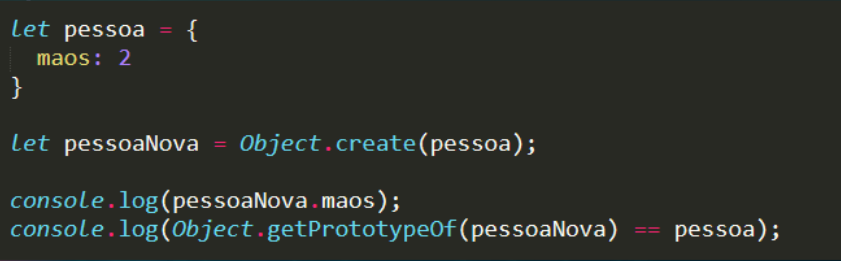

Um objeto fallback de outro objeto;
Quando um objeto recebe uma requisição de uma propriedade que não tem, ela é procura no prototype deste objeto;
O prototype de um objeto criado do zero é o Object, que tem os métodos nativos da linguagem;
Quando criamos um objeto a partir de um outro, o base será o prototype;
Ele herdará tanto os métodos e propriedades de Object (o prototype do objeto base);
Quanto os do objeto base para este novo;
